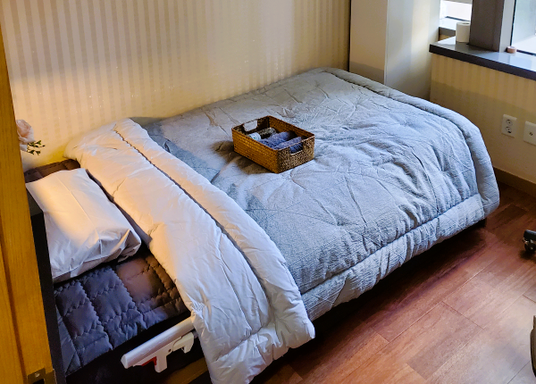

편안한 잠, 건강한 하루
목동 수면다원검사로 시작하세요
심한 코골이와 수면무호흡증은 방치하면 만성 피로를 넘어 합병증을 유발합니다. 이비인후과 전문의 3인이 하룻밤 편안한 입원 정밀 검사부터 양압기 맞춤 처방 및 평생 케어까지 책임집니다.

코엔이비인후과 맞춤형 수면클리닉
체계적인 진단과 맞춤 치료를 통해 질 높은 수면을 다시 찾아드립니다.
수면다원검사 안내
병원에 하루 입원하여 잠자는 동안 뇌파, 안구 운동, 근육 긴장도, 산소 포화도 등을 측정하는 표준 수면 정밀 검사입니다.
검사 과정 보기코골이·무호흡 자가진단
혹시 나도 치료가 필요한 수면 장애일까? 간편한 5가지 체크리스트를 통해 수면 건강 위험도를 즉시 확인해보세요.
1분 만에 진단하기급여 비용 확인하기
단순 코골이와 달리 질병이 의심되는 경우, 본인부담금 20% 수준의 건강보험 혜택이 적용되는 조건과 혜택 금액을 안내합니다.
본인부담 비용 보기양압기 클리닉 안내
수면무호흡증의 대표적인 비수술 표준 치료! 건강보험 지원을 통한 렌탈 처방과 데이터 기반 수면 무호흡 집중 관리 기법을 소개합니다.
양압기 케어 받기단 한 번의 검사로 수면 문제를 해결하세요
철저하게 준비된 환자 중심의 원스톱 수면다원검사 관리 솔루션입니다.
상담 신청 및 진료
전화 또는 간편한 온라인 상담 신청을 통해 예약 후 병원에 방문합니다. 이비인후과 전문의가 구강 및 비강 내시경 검사를 통해 해부학적 기도를 진찰하고 급여수면다원검사 적용 여부를 우선 판단합니다.
1인실 야간 수면다원검사
예약된 검사일 저녁, 호텔 수준의 쾌적한 1인 수면실에 입원합니다. 전문 수면기사가 정밀 센서를 수면 중에 방해되지 않도록 꼼꼼하게 부착하고 다각도의 수면 상태 모니터링 검사를 6~7시간 진행합니다.
결과 분석 및 맞춤 처방
수면 데이터 분석 후 판독 결과를 전문의가 상세히 설명합니다. 중증 수면무호흡증 등으로 진단될 경우 즉시 개인에게 최적화된 양압기(CPAP) 사용 압력을 테스트하여 건강보험 급여로 양압기 렌탈 처방을 진행합니다.
건강보험 적용 급여수면다원검사 비용 안내
과거 고가 비급여 검사였던 수면다원검사, 이제 급여 지원을 받으실 수 있습니다.
수면 장애 의심 시 본인부담금 요율표
| 대상 구분 | 보험 구분 | 최종 본인 부담금 |
|---|---|---|
| 일반 건강보험 대상자 | 급여 20% 적용 | 135,930원 |
| 의료급여 1종 / 차상위 1종 | 전액 국고 지원 | 0원 |
| 의료급여 2종 | 급여 적용 | 67,960원 |
| 차상위 2종 | 급여 적용 | 95,150원 |
일반 건강보험 환자 기준
135,930원
※ 실손/실비 보험(실손의료비 가입 조건에 따라 차이가 있을 수 있음) 청구가 가능한 법정 비급여 외 급여 항목이므로 환자 부담이 훨씬 더 낮아질 수 있습니다. 사전 상담을 받아보세요.
양압기치료 효과
양압기 치료를 통해서 건강한 수면을 되찾으세요
무호흡·저호흡 감소로 인한 수면의 질 개선
기도가 막히지 않도록 지속적으로 공기를 밀어 넣어 무호흡·저호흡 횟수(AHI)를 크게 낮춰줍니다. 수면 중 각성이 줄면서 깊은 잠(서파수면)의 비율이 늘어나 실제로 "잘 잤다"는 느낌을 회복하게 됩니다.
주간 졸음 및 인지기능 개선
야간 수면의 질이 좋아지면서 주간 과다졸음(EDS)이 줄고, 집중력·기억력·판단력 저하가 개선됩니다. 운전 중 졸음이나 작업 중 실수 위험이 줄어드는 것도 이 효과와 연결됩니다.
심혈관계 합병증 위험 감소
반복적인 무호흡으로 인한 저산소증과 교감신경 항진이 줄어들면서, 고혈압·부정맥·심부전·뇌졸중 등 심혈관계 질환 위험이 낮아집니다. 특히 치료저항성 고혈압 환자에서 양압기 사용 후 혈압이 개선되는 경우가 보고되어 있습니다.
공신력 있는 수면 의학 네트워크 및 협력 의료 기관
수면인증의 전문의 3인 공동 진료
학술적 전문 자격과 임상적 신뢰를 바탕으로 환자분의 숙면을 책임집니다.
이학천 대표원장
이비인후과 전문의 / 수면인증의- 고려대학교 의과대학 및 동대학원 졸업
- 고려대학교 구로병원 이비인후과 전공의 수료
- 대한이비인후과학회 정회원
- 대한수면학회 정회원 및 수면인증의 획득
- 대한이비인후과학회 정회원
이나리 원장
이비인후과 전문의 / 수면인증의- 고려대학교 의과대학 및 동대학원 졸업
- 고려대학교 구로병원 이비인후과 전공의 수료
- 대한이비인후과학회 정회원
- 대한수면학회 정회원 및 수면인증의 획득
- 대한이비인후과학회 정회원
옥소혜 원장
이비인후과 전문의 / 수면인증의- 고려대학교 의과대학 및 동대학원 졸업
- 고려대학교 구로병원 이비인후과 전공의 수료
- 대한이비인후과학회 정회원
- 대한수면학회 정회원 및 수면인증의 획득
- 대한이비인후과학회 정회원
수면다원검사 자주 묻는 질문
검사를 망설이거나 궁금하신 점이 있으시다면 아래 내용을 확인해 보세요.
오시는 길 및 안내
목동역 인근 트라팰리스에 위치해 대중교통 및 자차 이동이 모두 편리합니다.
목동코엔이비인후과
-
주소
서울 양천구 오목로 299 트라팰리스 웨스턴 에비뉴 4층 -
지하철
5호선 오목교역 8번 출구 또는 목동역 5번 출구 도보 5분 거리 -
주차
트라팰리스 웨스턴에비뉴 건물 내 무료 주차 지원 (수면다원검사 입원 환자 주차권 제공)